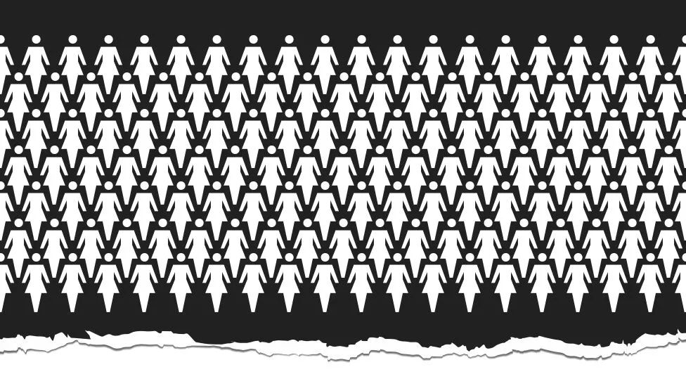
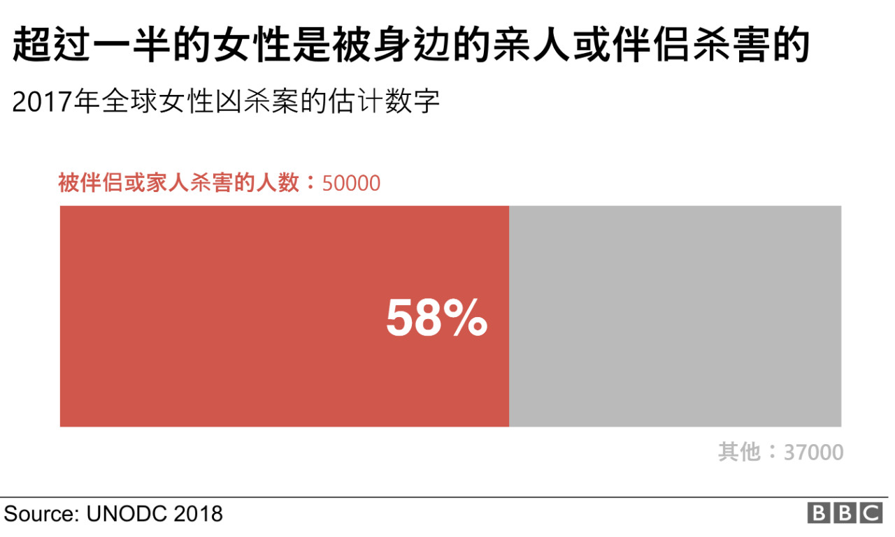
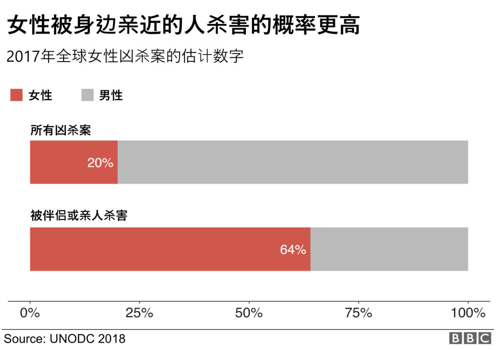
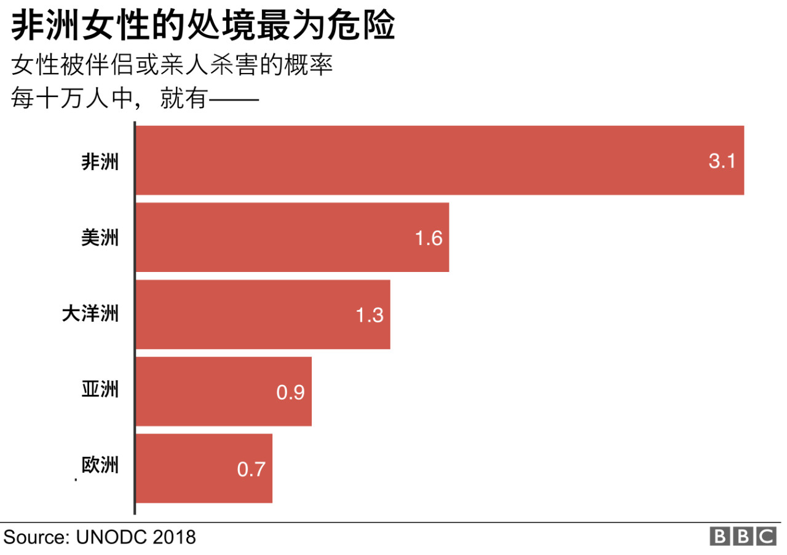

图说 | 一天内全球被杀害的女人

翻译：花花
原文：请查看原文链接
排版及制图：许旸
联合国毒品和犯罪问题办公室(UNODC)发布的最新数据显示，全球平均每天有 137 名妇女死于家庭暴力。
"对于女性来说，家庭反而是最危险的地方"，他们这样说。
据报道，2017年共有87000名女性被杀害，其中超过一半死于身边最亲密的人之手。
其中，大约有 30,000 名妇女被伴侣杀害，另有 20,000 名被亲人杀害。
BBC 100 Women 栏目想要深入了解这些女性背后的故事。整个 10 月份，我们都在追踪当月第一天的女性凶杀案报道。下面我们将分享其中一些故事，并了解这些新闻是如何被报道的。

男性凶杀率仍然较高
联合国毒品和犯罪问题办公室收集的数据突出表明，“男性因谋杀丧生的概率是女性的四倍”。全球十分之八的凶杀案的受害者是男性。
然而，这份报告同样指出，发生在亲密关系中的凶杀案，至少每 10 名受害者就有 8 名是女性。
"亲密关系中的暴力对女性造成了严重伤害。"

一天之内，47 个女人，21 个国家
联合国根据政府提供的凶杀统计数据，得出了 2017年的调查结果。“与性别相关“的判定标准是，这些女性均被伴侣或亲人杀害。
BBC 100 Women 栏目与 BBC Monitoring 开始挖掘这些数字背后的故事。
我们搜集了世界各地发生在 2018 年 10 月 1 日的女性凶杀案。当地专家统计了了发生在 21 个不同的国家的 47 例女性凶杀案，这些凶杀案的动机均明显与性别相关，其中大部分仍在调查中。
2018年10月1日被报道的女性凶杀案
以下是其中五起案件，均被当地媒体报道，经 BBC 联系当地政府后核实。
Judith Chesang，22岁，肯尼亚
10月1日，星期一，Judith Chesang 正与她的妹妹Nancy在田地里干农活。
Judith 是三个孩子的母亲，最近刚与她的丈夫Laban Kamuren分居，她决定回到娘家，一个在肯尼亚北部的村庄。
两姐妹刚开始干农活不久，男人来到她们的农场，杀害了 Judith。
当地警方称，他之后便被当地村民们围攻而死。
联合国的报告称，非洲女性被伴侣或亲人杀害的风险最高。每10万人中有3.1人死于该类凶杀案件。
亚洲则在数量上居于榜首，在2017年，共计2万名女性死于该类凶杀案。
Neha Sharad Chaudury，18岁，印度
Neha Sharad Chaudury 在她18岁生日那天死于"荣誉谋杀"。那天她与男朋友外出庆祝生日。警方向BBC透露，她的父母并不支持他们的关系。
根据指控，当晚她的父母与另一名男性亲属在家中杀害了她。调查仍在继续，目前凶手三人被拘留，等待审判。BBC 从凶手的辩护律师处得知，他们打算否认指控。
每年都有数以百计的人，由于违背家人意愿相恋或结婚而被杀害。所谓“荣誉谋杀”的官方数据很难拿到，因为此类案件往往缺乏记录或未被报道。
Zeinab Sekaanvan，24岁，伊朗
由于谋杀自己的丈夫，Zeinab Sekaanvan被伊朗当局处决。
Zeinab出生于伊朗西北部一个贫穷且保守的库尔德家庭。为了寻求更好的生活，她在少女时期就离家出走并结婚。大赦国际（Amnesty International，世界性民间人权组织）表示，她的丈夫虐待她并且拒绝离婚，然而她报警后并未得到理睬。
17岁时，她因杀害丈夫被捕。包括大赦国际在内的Zeinab的支持者宣称，她是被警察屈打成招才承认谋杀，而且审判过程也并不公正。
联合国毒品和犯罪问题办公室（UNODC）的报告表明，那些杀害伴侣的女性往往经受过"长时间的肢体暴力"。并且，男性犯罪者通常表现出"占有欲、嫉妒以及害怕被抛弃的恐惧"。
另一对夫妻的案件似乎恰巧印证了这一点，Zeinab 被处决的同一天，这对巴西夫妻被发现死亡。
Sandra Lucia Hammer Moura, 39, 巴西
Sandra Lucia Hammer Moura 在16岁时嫁给了 Augusto Aguiar Ribeiro。她被丈夫杀害时，他们已经分居五个月了。
Jardim Taquari的警察告诉BBC巴西分部，她是被刺中脖子而身亡的。他们在她丈夫的手机里发现了他的自首视频。他声称Sandra在与另一个男人约会，他因此感到被背叛。他还在视频中说，他不会被逮捕，因为他们将被"主的荣耀"所笼罩。之后便在他们的卧室里上吊自杀了。
Sandra 的案件让人们注意到这种"谋杀-自杀"的杀人形式——杀死别人然后再自杀。
BBC Monitoring 注意到，今年的10月1日，拉丁美洲共有14名妇女被杀害，其中两起案件发生在萨尔瓦多。萨尔瓦多当局告诉 BBC，到目前为止，2018年当地至少有300名女性被杀害。
Marie-Amélie Vaillat，36岁，法国
Marie-Amélie被自己的丈夫Sébastien Vaillat用刀捅死。这对夫妇在结婚四年后分居。他杀害她后便去自首。几天后在监狱里自杀。
Marie-Amélie Vaillat在Rue Bichat的内衣店门外，是当地居民留下的一片花海，他们组织了一场纪念她的游行。
Marie-Amélie被杀害的同一天，法国政府公布了解决家暴问题的新计划。
一起女性凶杀案要怎样才能被报道出来？
为了搜集这些故事，BBC Monitoring 的记者和研究人员分析了世界各地的电视、广播、报纸、网络和社交媒体，搜寻发生在2018年10月1日的女性凶杀案。
他们一共搜集了 47 份报道，均为发生在那一天的女性凶杀案。我们只分享了其中一部分故事。其余还有许多动机不明或还未确定凶手的案件。
联合国毒品和犯罪问题办公室的新报告声称，很大一部分针对女性的暴力案件并未向公众报道，它们被隐藏在暗流之下。
BBC Monitoring 的项目负责人 Rebecca Skippage 发现了这些数字背后的解读方式,"媒体如何报道这些妇女的死亡，如何描述她们的生活，往往体现了世界各地不同的社会文化对女性的看法。"。
她进一步揭示:"我们花了一个月去搜寻在一天之内发生的凶杀案。我们发现，报道的滞后时间、记者的语气口吻与报道包含的信息量，往往能体现这个地区的女性地位。"
BBC Monitoring的工作人员Maryam Azwer搜集了最终数据。
“那些未被报道的凶杀案，数量并不比这些少。”她说。
“那些故事从未被媒体知晓，没有被报道，没有被证实，甚至没有得到调查，或是无从调查。这不禁让人疑惑：一个女人的死亡要怎样才能被媒体重视且报道?”
了解更多关于BBC Monitoring 的这项研究
帮助和建议
若是你或你身边的人遭受家庭暴力，英国的这些组织或许可以提供帮助。
其他国家也有为家暴受害者提供建议和保护的组织。若你感到处于危险之中，请试着寻求当地组织的帮助。
100 Women是什么？
BBC 100 Women栏目每年都会提名来自世界各地的有影响力的100名女性，并分享她们鼓舞人心的故事。
今年是提升全球女性权利的重要的一年，因此BBC 100 Women 将在2018年选出最有影响力的女性领导者，她们饱含激情与愤怒的火花，推动这个世界的进步。
在 Facebook，Instagram 和 Twitter上关注我们，搜索 #100Women。
（翻译自 BBC News）